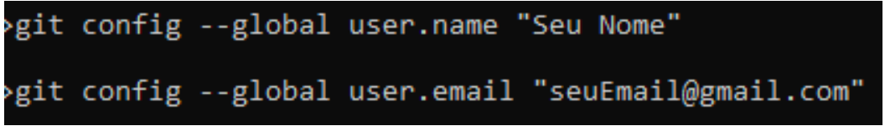
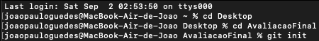

Qual a diferença entre os dois?
O Git é uma ferramenta de versionamento local, que salva o estado de cada arquivo na hora do versionamento e caso o arquivo não sofra a alteração ele cria um link simbólico para o arquivo não editado. Para poder utilizar os comandos do git, você precisará executar o seguinte tutorial:
- Fazer download do Git
- Fazer Instalação
- Verificar versão
- Configurá-lo
- Inicializá-lo
Alguns comandos mais usados do git são:
- git status
- git add < filename ou . >
- git restore --staged < filename ou . >
- git branch < branchname >
- git checkout < branchname >
- git checkout -b < branchname >
- git commit -m < description >
- git push
- git branch -D < branchname >
- git fetch
- git pull
Juntamente com o Git, utiliza-se também o GitHub. Que é um serviço Web compartilhado para projetos que utilizam o Git para versionamento. É um local de armazenamento de código.A diferença entre os dois é que o Git faz o controle de Versão localmente e o GitHub é um repositório remoto.
Para utilizar o GitHub primeiro é necessário criar uma conta. De preferência use o mesmo email que você usou para configurar o git! Após criada a conta iremos para os seguintes passos:
- Verificar se exsite chave SSH.
- Adicionar uma nova chave
ssh-keygen -t ed25519 -C "seu_email@exemplo.com"
- Inicializar agente-ssh.
eval "$(ssh-agent-s)"
- Adicionar chave ssh ao agente.
ssh-add˜/.ssh/id_ed25519
- Copiar chave ssh
clip < ˜/.ssh/id_ed25519.pub
- Adicionar chave no GitHub
GitHub -> Settings -> SSH and GPG keys -> New SSH key -> Colar
- Testar Conexão
ssh -T git@github.com yes
ls -al˜/.ssh
Deve-se lembrar de manter as boas práticas, e aqui está algumas delas:
-
Após acessar o link de download, basta escolher a versão compatível com seu Sistema Operacional.

-
Ao instalar você pode manter as configurações padrões que o próprio git indica.


-
Após terminar de instalar, você agora pode verificar se o git foi instalado corretamente. Você pode fazer isso abrindo o terminal de controle ( CMD ) e digitar o seguinte comando: git --version
-
Para configurá-lo é bem simples, basta você digitar os seguintes comandos:
 -
Após configurar o git com seu email e usuário, basta inicializá-lo para poder começar a fazer uso da ferramenta em seus projetos. Para inicializá-lo você precisa abrir o terminal de controle, e digitar os seguintes comandos:
